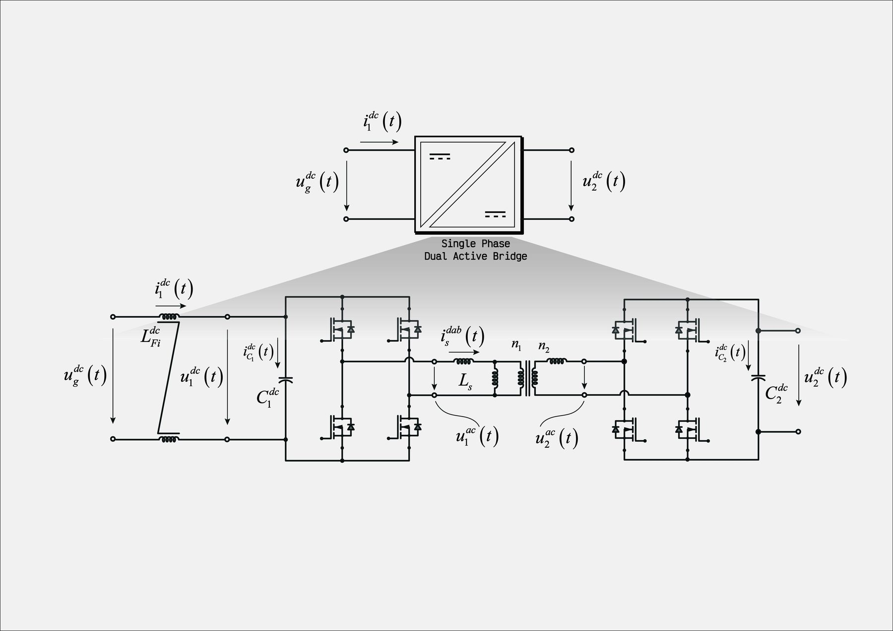

Single-phase dual active bridge
250 kW isolated bidirectional DC/DC stage: electrothermal Simscape bench with phase-shift modulation, ZVS analysis per device, losses and spectrum.

What it is
The dual active bridge (DAB) is the isolated DC/DC building block used throughout this site: two full bridges connected through a medium-frequency transformer and a series inductance, with the power flow set by the phase shift between the two bridge voltages. This bench models a 250 kW stage for a 690 V AC application (about 1100 V on the DC link).
The model is electrothermal: the switching devices carry their conduction and switching losses and a thermal network, so the ZVS boundaries and the junction temperatures come out of the simulation together with the electrical waveforms.
What the bench does
- Phase-shift modulator and current control written in C and run through C-Caller blocks, exactly as they would run on a target.
- ZVS analysis per device across the operating range, device losses, and spectrum of the transformer quantities from the logged results.
- Device model selected by flags in
init_model.m: SiC MOSFET with thermal model (Danfoss SKM1700MB20R4S2I4, default), IGBT (Mitsubishi CM1200DW-24T) or ideal switch.